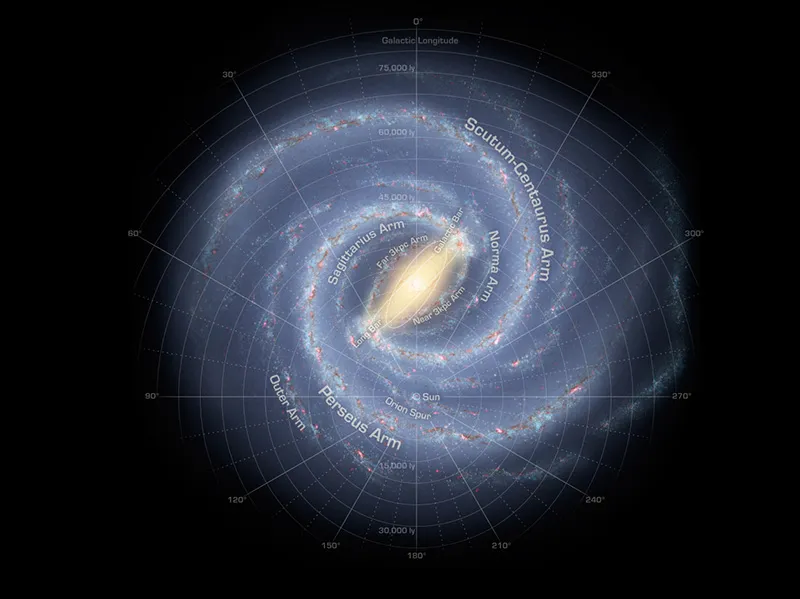

Our Sun is a 4.5 billion-year-old yellow dwarf star – a hot glowing ball of hydrogen and helium – at the center of our solar system. It’s about 93 million miles (150 million kilometers) from Earth and it’s our solar system’s only star. Without the Sun’s energy, life as we know it could not exist on our home planet.
From our vantage point on Earth, the Sun may appear like an unchanging source of light and heat in the sky. But the Sun is a dynamic star, constantly changing and sending energy out into space. The science of studying the Sun and its influence throughout the solar system is called heliophysics. The Sun is the largest object in our solar system. Its diameter is about 865,000 miles (1.4 million kilometers). Its gravity holds the solar system together, keeping everything from the biggest planets to the smallest bits of debris in orbit around it. Even though the Sun is the center of our solar system and essential to our survival, it’s only an average star in terms of its size. Stars up to 100 times larger have been found. And many solar systems have more than one star. By studying our Sun, scientists can better understand the workings of distant stars. The hottest part of the Sun is its core, where temperatures top 27 million °F (15 million °C). The part of the Sun we call its surface – the photosphere – is a relatively cool 10,000 °F (5,500 °C). In one of the Sun’s biggest mysteries, the Sun’s outer atmosphere, the corona, gets hotter the farther it stretches from the surface. The corona reaches up to 3.5 million °F (2 million °C) – much, much hotter than the photosphere.
Namesake
The Sun has been called by many names. The Latin word for Sun is “sol,” which is the main adjective for all things Sun-related: solar. Helios, the Sun god in ancient Greek mythology, lends his name to many Sun-related terms as well, such as heliosphere and helioseismology.
Size and Distance
Our Sun is a medium-sized star with a radius of about 435,000 miles (700,000 kilometers). Many stars are much larger – but the Sun is far more massive than our home planet: it would take more than 330,000 Earths to match the mass of the Sun, and it would take 1.3 million Earths to fill the Sun's volume.
The Sun is about 93 million miles (150 million kilometers) from Earth. Its nearest stellar neighbor is the Alpha Centauri triple star system: red dwarf star Proxima Centauri is 4.24 light-years away, and Alpha Centauri A and B – two sunlike stars orbiting each other – are 4.37 light-years away. A light-year is the distance light travels in one year, which equals about 6 trillion miles (9.5 trillion kilometers).
Orbit and Rotation
The Sun is located in the Milky Way galaxy in a spiral arm called the Orion Spur that extends outward from the Sagittarius arm.

The Sun orbits the center of the Milky Way, bringing with it the planets, asteroids, comets, and other objects in our solar system. Our solar system is moving with an average velocity of 450,000 miles per hour (720,000 kilometers per hour). But even at this speed, it takes about 230 million years for the Sun to make one complete trip around the Milky Way.
The Sun rotates on its axis as it revolves around the galaxy. Its spin has a tilt of 7.25 degrees with respect to the plane of the planets’ orbits. Since the Sun is not solid, different parts rotate at different rates. At the equator, the Sun spins around once about every 25 Earth days, but at its poles, the Sun rotates once on its axis every 36 Earth days.
Formation
The Sun formed about 4.6 billion years ago in a giant, spinning cloud of gas and dust called the solar nebula. As the nebula collapsed under its own gravity, it spun faster and flattened into a disk. Most of the nebula's material was pulled toward the center to form our Sun, which accounts for 99.8% of our solar system’s mass. Much of the remaining material formed the planets and other objects that now orbit the Sun. (The rest of the leftover gas and dust was blown away by the young Sun's early solar wind.)
Like all stars, our Sun will eventually run out of energy. When it starts to die, the Sun will expand into a red giant star, becoming so large that it will engulf Mercury and Venus, and possibly Earth as well. Scientists predict the Sun is a little less than halfway through its lifetime and will last another 5 billion years or so before it becomes a white dwarf.
Quick Facts
Length of day: 25 Earth days at the equator and 36 Earth days at the poles.
Length of year: The Sun doesn't have a "year," per se. But the Sun orbits the center of the Milky Way about every 230 million Earth years, bringing the planets, asteroids, comets, and other objects with it.
Star type: G2 V, yellow dwarf main-sequence star
Surface temperature: (Photosphere) 10,000 degrees Fahrenheit (5,500 degrees Celsius)
Corona (solar atmosphere) temperature: Up to 3.5 million °F (2 million °C)